SMB Direct
Your music, right where you left it.
Connect directly to your NAS or SMB share. No Finder mounting, no Files app mounting, and no cloud copy of the library.
Set up SMB Direct →1.1.5 on Mac, iPad, iPhone & iPhone Duo · Available now
Built for the music you own on Mac, iPad, iPhone and iPhone Duo—with Memory Playback, SMB Direct, bit-perfect USB DAC output, Native DSD and DoP, plus HALO network audio up to DSD512.
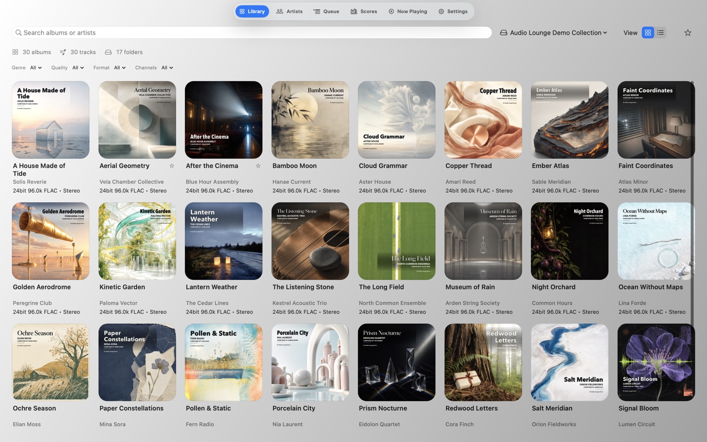
What’s new in Audio Lounge 1.1.5
Inspired by your feedback, Folder View lets you explore your music collection through its original folder structure—with Audio Lounge’s intelligent album organization, artwork, metadata, and playback features built in.
See albums with their artwork and metadata as you browse your folders.
Stereo and multichannel SACD editions and multi-disc albums retain the same intelligent grouping as in Library View.
Switch between Library and Folders, each with its own Grid or List layout.
Access the same album details, favorites, filters, and playback features in either view.
Browse smoothly with optimized album rendering, artwork caching, and incremental loading.
Audio Lounge Air continues to refine iPhone and iPhone Duo support, polishing the adaptive interface and hinge-aware Duo experience.
Audio Lounge 1.1.5 is available now for Mac, iPad, iPhone and iPhone Duo.
Designed to disappear
The new networking features are there to remove setup from the listening experience—not add another system to manage.
SMB Direct
Connect directly to your NAS or SMB share. No Finder mounting, no Files app mounting, and no cloud copy of the library.
Set up SMB Direct →HALO Network Audio
Preserve a bit-perfect network playback path, with Native DSD up to DSD512 for compatible DACs.
Explore HALO →Audio Lounge across every screen
More on iPhone
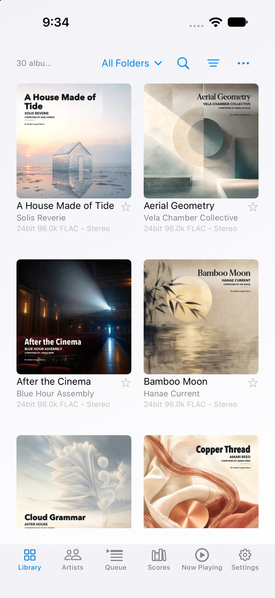
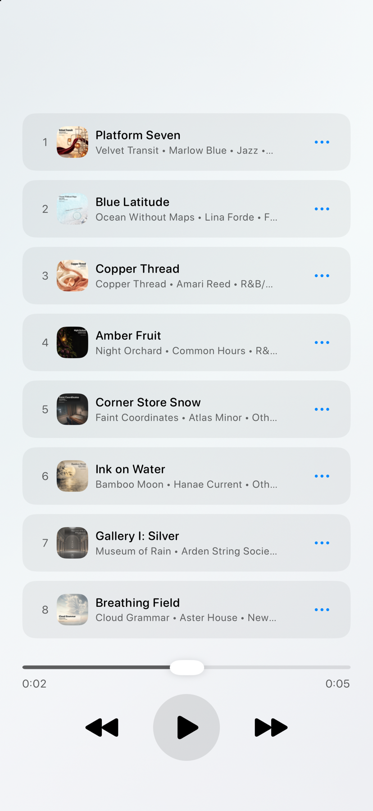
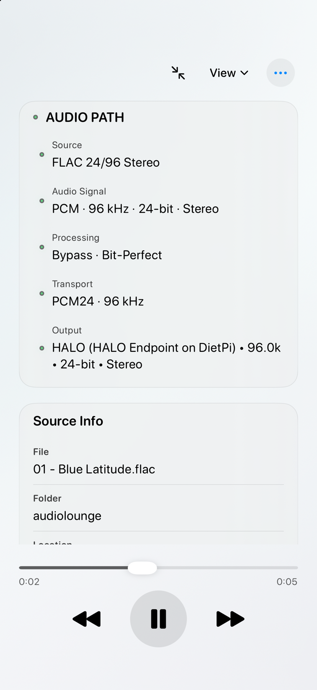
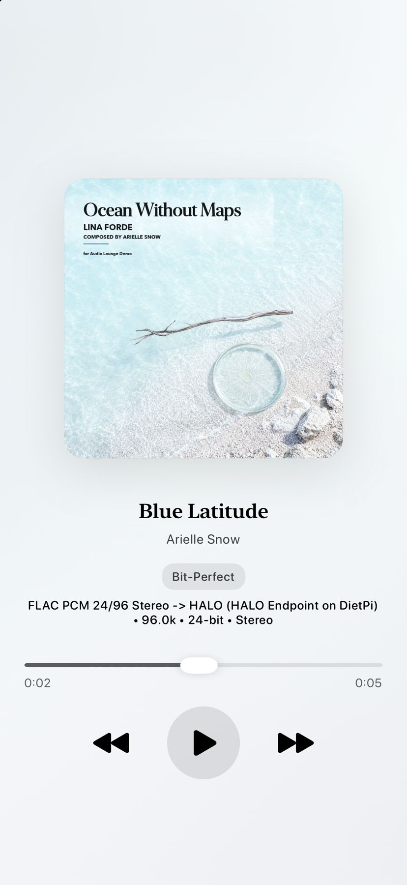
More on iPhone Duo
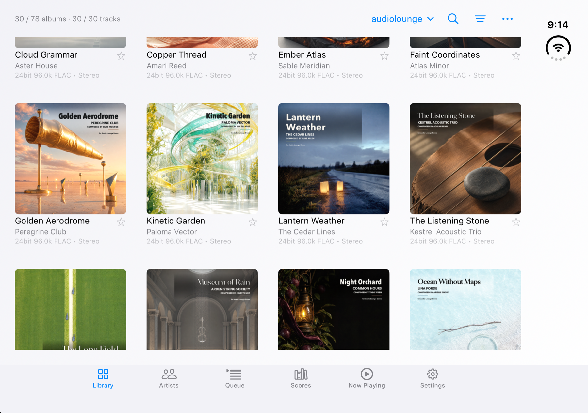
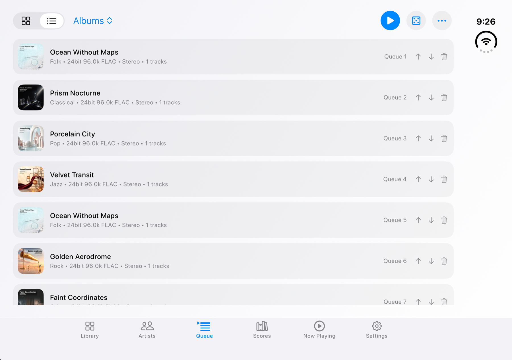
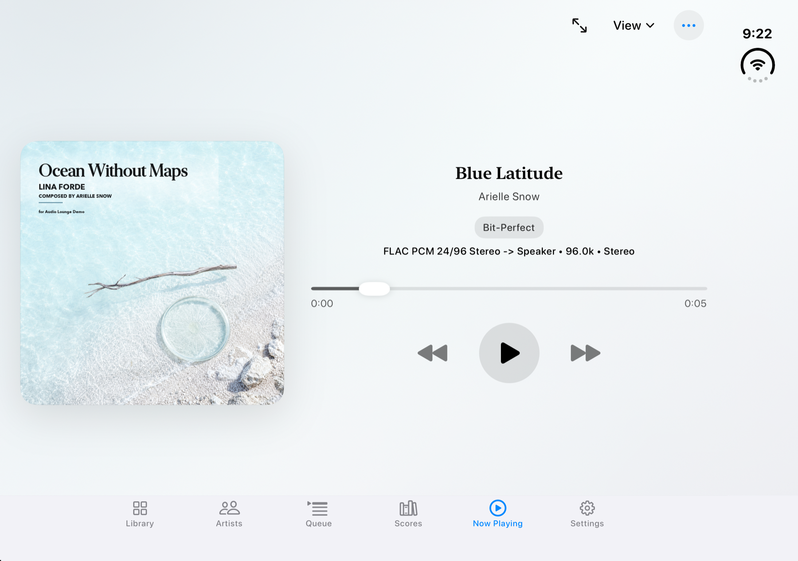
Mac & iPad
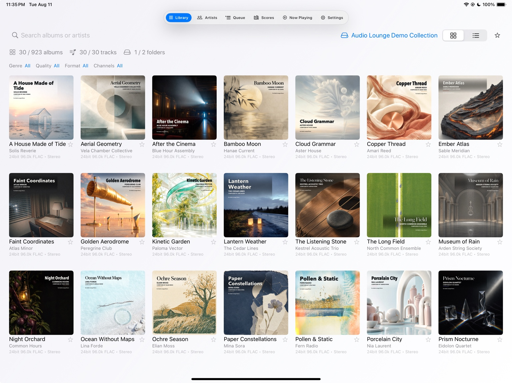
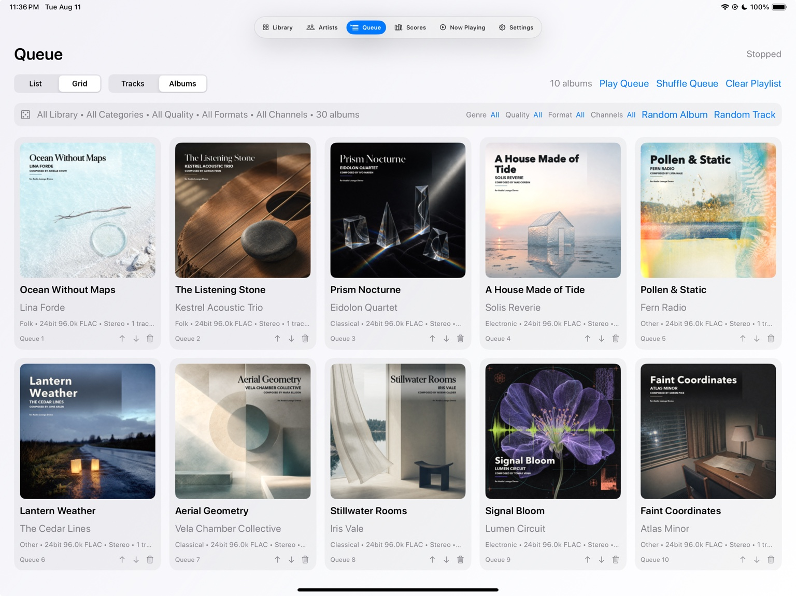
Faithful Playback
A memory-buffered engine, bit-perfect playback on supported hardware, Native DSD and DoP for compatible USB DACs, automatic sample-rate matching, gapless playback, and optional PCM upsampling.
Learn how DSD playback works on Mac →Transparent Audio Path
See the source format, playback path, output device, and final sample rate in real time.
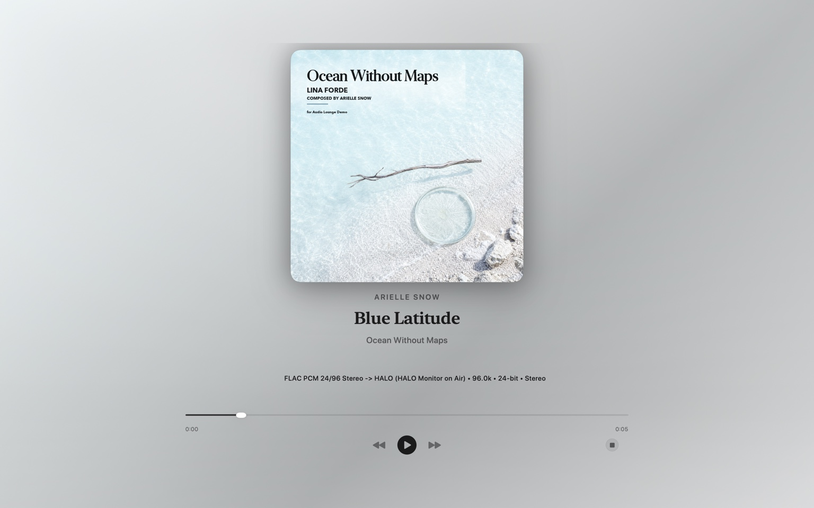
Technology should serve the listening experience—and quietly get out of the way.
Start free
Audio Lounge 1.1.5 is available now for Mac, while Audio Lounge Air 1.1.5 is available now for iPad, iPhone and iPhone Duo. Preview every track for 30 seconds; a one-time purchase unlocks full-length playback. No subscription.
Choose your platform